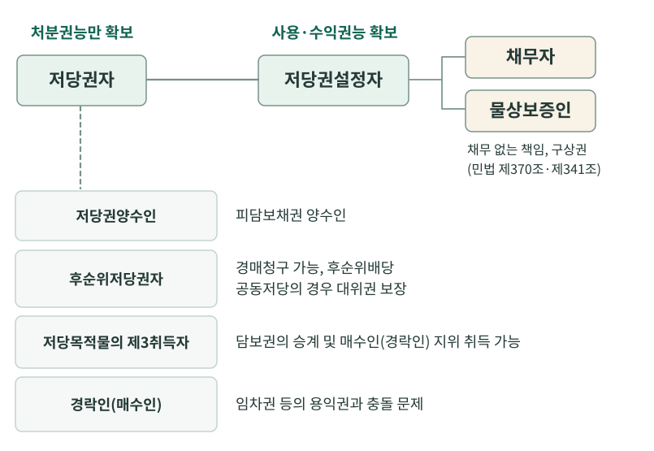

1. 의의
저당권은 채무자 또는 제3자인 물상보증인이 채무의 담보로 제공한 부동산이나 그 밖의 목적물을 채권자가, 채무자 또는 물상보증인으로부터 인도받지 않고서도, 채무의 변제가 없는 경우에 그 목적물로부터 우선변제를 받을 수 있는 담보물권이다(제356조). 저당권이 설정되더라도 저당목적물에 대한 점유 및 사용․수익은 저당권자에게 있지 않고 여전히 저당권설정자(소유자)에게 있다는 점에서, 목적물에 대하여 유치적 효력이 인정되는 질권과 다르다.
2. 근대적 저당권의 특질
보편적 관점에서 살펴보면, 원래 저당권은 특정채권의 효력을 보장하는 것을 중심으로 하여 구성되었다. 당초 저당권은 인적신용에 기반을 두었고, 그 피담보채권에 의존하는 성격을 띠었다. 그러나 근대에 이르러, 저당권은 오로지 재화가 가지는 교환가치만을 중심으로 재구성 및 발전되고 있다. 이로써 인적신용으로부터 분리된, 교환가치 중심의 저당권이 형성되고, 거래계에서는 이를 투자의 객체로 삼아 금융시장에서 유통하는 데까지 이르기도 한다. 이러한 구성 및 발전 과정에서 저당권은 원칙적으로 다음과 같은 특질을 보유해야 한다.
첫째, 저당권의 존재는 반드시 등기․등록에 의하여 공시되어야 한다(공시의 원칙). 우리 민법도 이러한 공시의 원칙을 관철하고 있음은 앞서 본 바와 같다. 극히 제한된 경우에 한하여 법정저당권이 인정되고 있을 뿐이다(제649조).
둘째, 저당권은 특정․현존의 목적물 위에만 성립할 수 있다(특정의 원칙). 이는 담보물권의 물질적 기초를 확정함으로써 저당권에 의하여 파악되는 가치에 대해서 객관성을 부여함과 동시에 채무자의 전 재산 위에 인정되는 일반저당권을 배척하기 위한 것이다. 피담보채권액이나 저당물을 항상 특정하여 등기하도록 하는(부동산등기법 제140조-제143조 참조) 등 우리 법도 이러한 원칙에 입각하고 있다. 다만, 법정저당권에서는 이 원칙이 관철되지 않는다.
셋째, 동일한 목적물 위에 여러 개의 저당권이 존재할 때에는 각 저당권은 확정된 순위를 가지고 있어 서로 침범하지 않는다는 원칙이다(순위확정의 원칙). 즉, i) 저당권의 순위는 등기의 선후에 의하여 결정되고, 먼저 등기된 저당권은 후에 등기된 저당권에 의하여 그 순위가 내려가지 않으며(제370조, 제333조 참조), ii) 한번 주어진 저당권의 순위는 선순위의 저당권이 소멸하더라도 그 순위가 상승하지 않는다. 우리 민법은 이 원칙 중 i)의 내용은 채택하고 있으나, ii)의 내용을 채택하고 있지는 않다. 따라서 1번 저당권이 소멸하면 2번 저당권은 그 순위가 자동적으로 올라가서 1번 저당권으로 된다.15 넷째, 독립의 원칙은 저당권을 특정채권의 담보라는 종된 지위에서 해방시켜 재화의 교환가치를 지배하는 가치권으로서, 즉 금융거래의 객체로서의 독자적 지위를 확보하게 하려는 것이다. 이 원칙은 다음의 내용을 가진다. i) (추상화의 원칙) 저당권이 채권으로부터 독립되어야 한다. 즉, 저당권이 피담보채권으로부터 완전히 분리되어(부종성의 부인), 추상적 존재로 되어야 한다는 것이다. 그러나 우리 민법에서는 저당권이 그 피담보채권과 분리되어 타인에게 양도되거나 다른 채권의 담보로 제공되는 것이 금지되고(제361조), 피담보채권의 소멸로 저당권도 당연히 소멸하므로(제369조) 이러한 의미에서 독립의 원칙을 취하지는 않는다. 다만, 근저당권을 인정함으로써(제357조) 저당권의 성립에 관하여 부종성을 완화하고 있을 뿐이다. ii) (투자자지위의 보전) 저당권이 후순위저당권의 실행으로 인하여 변제받을 것을 강요당하지 않아야 한다. 그러나 민사집행법 제91조 2항은 후순위저당권자의 경매신청에 의한 매각이 있는 경우 선순위저당권도 소멸한다고 규정함으로써 결과적으로 우리 민법은 후순위저당권으로부터의 독립의 원칙을 취하지 않고 있다. iii) (일반재산에 대한 집행제한) 독립의 원칙은 특정목적물의 교환가치를 우선적으로 파악하고 채무자의 일반재산에 대한 집행을 금지하는 내용을 포함한다. 우리 민법은 이러한 의미에서의 저당권 독립의 원칙을 부분적으로 따르고 있다. 예컨대 저당권자는 담보목적물에 의하여 변제를 받지 못한 부분의 채권에 한하여 채무자의 다른 재산으로부터 변제받을 수 있다(제370조, 제340조 1항). iv) (이용권으로부터의 독립) 또한 독립의 원칙은 저당권의 목적물을 용익하는 자로부터 독립할 것을 요구하는데, 우리 민법은 이에 해당한다.
다섯째, 특정의 교환가치를 우선적으로 파악하는 저당권을 금융거래시장에서 유통되도록 하기 위해서는 저당권의 유통성, 즉 저당권거래의 안전과 신속한 양도가 확보되지 않으면 안 된다. 이를 위해서는 공신의 원칙과 저당권의 증권화가 요구된다. 그러나 우리 민법은 등기부에 공신력을 인정하지 않을 뿐만 아니라, 저당권의 증권화도 인정하지 않고 있다.16
관련 판결례
대법원 2000. 12. 12. 선고 2000다49879 판결
저당권은 피담보채권에 부종하므로 원칙적으로 같은 사람에게 귀속한다. 다만 제3자 명의로 등기하기로 채권자·채무자·제3자가 합의하고, 제3자에게 실질적으로 채권이 귀속되거나 묵시적 불가분채권관계로 채무자가 채권자와 제3자 중 누구에게든 유효하게 변제할 수 있다면 제3자 명의의 저당권등기도 유효하다. 이 법리는 담보가등기에도 적용되며 부동산실명법상 명의신탁 금지에 위반되지 않는다.
강의안 수록 원문
대법원 2000. 12. 12. 선고 2000다49879 판결
채권담보의 목적으로 채무자 소유의 부동산을 담보로 제공하여 저당권을 설정하는 경우에는 담보물권의 부종성의 법리에 비추어 원칙적으로 채권과 저당권이 그 주체를 달리할 수 없는 것이지만, 채권자 아닌 제3자의 명의로 저당권등기를 하는 데 대하여 채권자와 채무자 및 제3자 사이에 합의가 있었고, 나아가 제3자에게 그 채권이 실질적으로 귀속되었다고 볼 수 있는 특별한 사정이 있거나, 거래경위에 비추어 제3자의 저당권등기가 한낱 명목에 그치는 것이 아니라 그 제3자도 채무자로부터 유효하게 채권을 변제받을 수 있고 채무자도 채권자나 저당권 명의자인 제3자 중 누구에게든 채무를 유효하게 변제할 수 있는 관계 즉 묵시적으로 채권자와 제3자가 불가분적 채권자의 관계에 있다고 볼 수 있는 경우에는, 그 제3자 명의의 저당권등기도 유효하다고 볼 것인바, 이러한 법리는 저당권의 경우뿐 아니라 채권 담보를 목적으로 가등기를 하는 경우에도 마찬가지로 적용된다고 보아야 할 것이고, 이러한 법리가 부동산실권리자명의등기에관한법률에 규정된 명의신탁약정의 금지에 위반된다고 할 것은 아니다.
대법원 1998. 7. 10. 선고 98다18643 판결
같은 물건의 소유권과 제한물권이 한 사람에게 귀속되면 제한물권은 원칙적으로 혼동으로 소멸한다. 다만 본인이나 제3자의 이익을 위해 제한물권을 존속시킬 필요가 인정되면 민법 제191조 제1항 단서의 해석상 그 권리는 소멸하지 않는다.
강의안 수록 원문
대법원 1998. 7. 10. 선고 98다18643 판결
어떠한 물건에 대한 소유권과 다른 물권이 동일한 사람에게 귀속한 경우 그 제한물권은 혼동에 의하여 소멸하는 것이 원칙이지만, 본인 또는 제3자의 이익을 위하여 그 제한물권을 존속시킬 필요가 있다고 인정되는 경우에는 민법 제191조 제1항 단서의 해석에 의하여 혼동으로 소멸하지 않는다.
대법원 2004. 4. 28. 선고 2003다61542 판결
피담보채권을 양도하면 담보권도 함께 넘어가는 것이 원칙이다. 이러한 담보권의 수반성은 담보의 목적상 당사자의 채권 처분에 담보권의 처분도 포함된다고 해석하는 데서 나온다. 담보권을 이전하지 않기로 한 특별한 사정이 있으면 양수인은 무담보채권을 취득하고, 피담보채권을 떠난 담보권은 양도인에게 남지 않고 소멸한다.
강의안 수록 원문
대법원 2004. 4. 28. 선고 2003다61542 판결
담보권의 수반성이란 피담보채권의 처분이 있으면 언제나 담보권도 함께 처분된다는 것이 아니라 채권담보라고 하는 담보권 제도의 존재 목적에 비추어 볼 때 특별한 사정이 없는 한 피담보채권의 처분에는 담보권의 처분도 당연히 포함된다고 보는 것이 합리적이라는 것일 뿐이므로, 피담보채권의 처분이 있음에도 불구하고, 담보권의 처분이 따르지 않는 특별한 사정이 있는 경우에는 채권양수인은 담보권이 없는 무담보의 채권을 양수한 것이 되고 채권의 처분에 따르지 않은 담보권은 소멸한다.
대법원 2020. 4. 29. 선고 2016다235411 판결
민법 제361조는 저당권만 떼어 처분하는 것을 금지하므로, 당사자는 저당권을 제외하고 피담보채권에만 질권을 설정할 수 있고 이는 저당권의 부종성에도 어긋나지 않는다. 채권만 양도할 때에는 양도인이 채권을 잃어 저당권도 소멸하지만, 채권만 입질한 경우 저당권은 설정자에게 남아 질권 소멸 후 실행할 수 있다. 특별한 사정이 없으면 저당권도 질권의 목적에 포함되지만, 제3자가 질권 부담을 알 수 있도록 제348조에 따라 저당권설정등기에 질권의 부기등기를 해야 효력이 저당권에 미친다. 무담보채권을 먼저 입질한 뒤 저당권을 취득한 경우에도 특약 등으로 저당권을 제외할 수 있고, 포함하려면 제348조를 유추적용하여 부기등기를 해야 한다.
강의안 수록 원문
대법원 2020. 4. 29. 선고 2016다235411 판결
[1] 민법 제361조는 “저당권은 그 담보한 채권과 분리하여 타인에게 양도하거나 다른 채권의 담보로 하지 못한다.”라고 정하고 있을 뿐 피담보채권을 저당권과 분리해서 양도하거나 다른 채권의 담보로 하지 못한다고 정하고 있지 않다. 채권담보라고 하는 저당권 제도의 목적에 비추어 특별한 사정이 없는 한 피담보채권의 처분에는 저당권의 처분도 당연히 포함된다고 볼 것이지만, 피담보채권의 처분이 있으면 언제나 저당권도 함께 처분된다고는 할 수 없다.
따라서 저당권으로 담보된 채권에 질권을 설정한 경우 원칙적으로는 저당권이 피담보채권과 함께 질권의 목적이 된다고 보는 것이 합리적이지만, 질권자와 질권설정자가 피담보채권만을 질권의 목적으로 하고 저당권은 질권의 목적으로 하지 않는 것도 가능하고 이는 저당권의 부종성에 반하지 않는다. 이는 저당권과 분리해서 피담보채권만을 양도한 경우 양도인이 채권을 상실하여 양도인 앞으로 된 저당권이 소멸하게 되는 것과 구별된다.
이와 마찬가지로 담보가 없는 채권에 질권을 설정한 다음 그 채권을 담보하기 위하여 저당권이 설정된 경우 원칙적으로는 저당권도 질권의 목적이 되지만, 질권자와 질권설정자가 피담보채권만을 질권의 목적으로 하였고 그 후 질권설정자가 질권자에게 제공하려는 의사 없이 저당권을 설정받는 등 특별한 사정이 있는 경우에는 저당권은 질권의 목적이 되지 않는다. 이때 저당권은 저당권자인 질권설정자를 위해 존재하며, 질권자의 채권이 변제되거나 질권설정계약이 해지되는 등의 사유로 질권이 소멸한 경우 저당권자는 자신의 채권을 변제받기 위해서 저당권을 실행할 수 있다.
[2] 민법 제348조는 저당권으로 담보한 채권을 질권의 목적으로 한 때에는 그 저당권설정등기에 질권의 부기등기를 하여야 그 효력이 저당권에 미친다고 정한다. 저당권에 의하여 담보된 채권에 질권을 설정하였을 때 저당권의 부종성으로 인하여 등기 없이 성립하는 권리질권이 당연히 저당권에도 효력이 미친다고 한다면, 공시의 원칙에 어긋나고 그 저당권에 의하여 담보된 채권을 양수하거나 압류한 사람, 저당부동산을 취득한 제3자 등에게 예측할 수 없는 질권의 부담을 줄 수 있어 거래의 안전을 해할 수 있다. 이에 따라 민법 제348조는 저당권설정등기에 질권의 부기등기를 한 때에만 질권의 효력이 저당권에 미치도록 한 것이다. 이는 민법 제186조에서 정하는 물권변동에 해당한다. 이러한 민법 제348조의 입법 취지에 비추어 보면, ‘담보가 없는 채권에 질권을 설정한 다음 그 채권을 담보하기 위해서 저당권을 설정한 경우’에도 ‘저당권으로 담보한 채권에 질권을 설정한 경우’와 달리 볼 이유가 없다.
또한 담보가 없는 채권에 질권을 설정한 다음 그 채권을 담보하기 위해 저당권을 설정한 경우에, 당사자 간 약정 등 특별한 사정이 있는 때에는 저당권이 질권의 목적이 되지 않을 수 있으므로, 질권의 효력이 저당권에 미치기 위해서는 질권의 부기등기를 하도록 함으로써 이를 공시할 필요가 있다.
따라서 담보가 없는 채권에 질권을 설정한 다음 그 채권을 담보하기 위해 저당권이 설정되었더라도, 민법 제348조가 유추적용되어 저당권설정등기에 질권의 부기등기를 하지 않으면 질권의 효력이 저당권에 미친다고 볼 수 없다.
3. 저당권의 법적 성질
(1) 저당권의 특질
저당권은 당사자 사이의 합의와 등기로 성립하는 약정담보물권이다. 이러한 점에서 질권과 그 성질이 같고(법정저당권은 예외이다), 유치권과 다르다. 또한, 저당권은 목적물에 관한 경매절차에서 실현되는 교환가치로부터 다른 채권자보다 우선변제 받는 효력을 본체로 하는 권리이다. 그리고 저당권은 목적물의 점유를 저당권설정자로부터 박탈하지 않는다(비점유권원). 즉, 유치적 효력을 갖지 않는다. 따라서 등기․등록에 의해 공시할 수 없는 재산권은 저당권의 목적이 될 수 없다.
(2) 담보물권으로서의 통유성
저당권은 타인소유의 부동산을 목적으로 한다(타물권성). 다만, 자기 소유의 부동산 위에 저당권이 성립하는 것은 혼동의 예외로서 인정될 뿐이다. 저당권은 피담보채권과 분리하여 타인에게 양도하거나 담보로 제공하지 못하고(제361조), 피담보채권이 변제․포기․혼동․면제 기타의 사유로 소멸하면 저당권도 소멸한다(제369조). 피담보채권을 발생하게 한 계약이 무효이거나 취소되면, 저당권도 무효가 되거나 소급적으로 효력을 상실한다(부종성). 피담보채권이 상속․양도에 의하여 그 동일성을 유지하여 승계되면 저당권도 승계된다(수반성). 저당권은 채권 전부의 변제를 받을 때까지 목적물 전부에 대하여 그 권리를 행사할 수 있다(불가분성: 제370조, 제321조). 저당권은 목적물의 멸실․훼손․공용징수로 인하여 저당권설정자가 받은 금전 기타 물건에 대하여도 행사할 수 있다(물상대위성: 제370조, 제342조).
[보론] 저당권 관련 당사자의 이해관계
